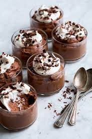

Shortbread

Description
Ingredients
- 1 1/3 cups heavy cream
- 1/2 cup powdered sugar
- 1/3 unsweetened cocoa powder
- 2/3 cup Philadelphia Whipped Cream Cheese KFT
- 2 tablespoons powdered sugar
- 1/2 teaspoon almond extract
- 1 tablespoon grated chocolate
Steps
- Combine cream, 1/2 cup powdered sugar, and cocoa powder in a large chilled bowl. Beat with an electric mixer with chilled beaters until stiff peaks form; set aside.
- Beat whipped cream cheese in a separate bowl until soft. Add 2 tablespoons powdered sugar gradually and beat until well combined. Mix in almond extract and beat until well incorporated. Fold the cream cheese mixture into the chocolate whipped cream until both are completely blended.
- Spoon or pipe mousse into small serving dishes. Top with grated chocolate.